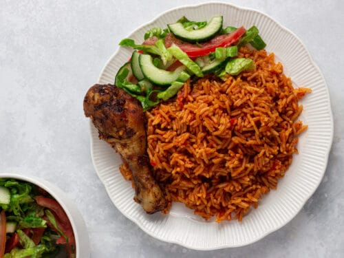

Jollof Rice

DESCRIPTION
A West Africa intercontinental dishes which is loved by Africans
INGREDIENTS
- Long-grain pre-boiled rice
- Fresh tomatoes and Tomatoe paste
- Onion,pepper and garlic
- Chicken and vegetable oil
- Curry powder, thyme and bay leaves
- And other ingredients if necessary
STEPS
- Blend tomatoes,onion,pepper and garlic for the steaw
- Slice some onions ,tomatoe paste and the blended ingredients in oil for the steaw
- Add your spice stirr and bring your steaw to boil
- Add your Pre-boiled rice and cook for 15 minutes under low heat